FIRST / FTC Robotics
FTC Robotics
Competition robot design, build, and testing through iterative mechanical and electrical development. This page documents the progression from CAD packaging and mechanism studies to physical robot integration, drivetrain testing, and field validation.
Awards & Recognition
Competition results
Competition robotics work documented from design review through physical integration, mechanism tuning, and field validation.
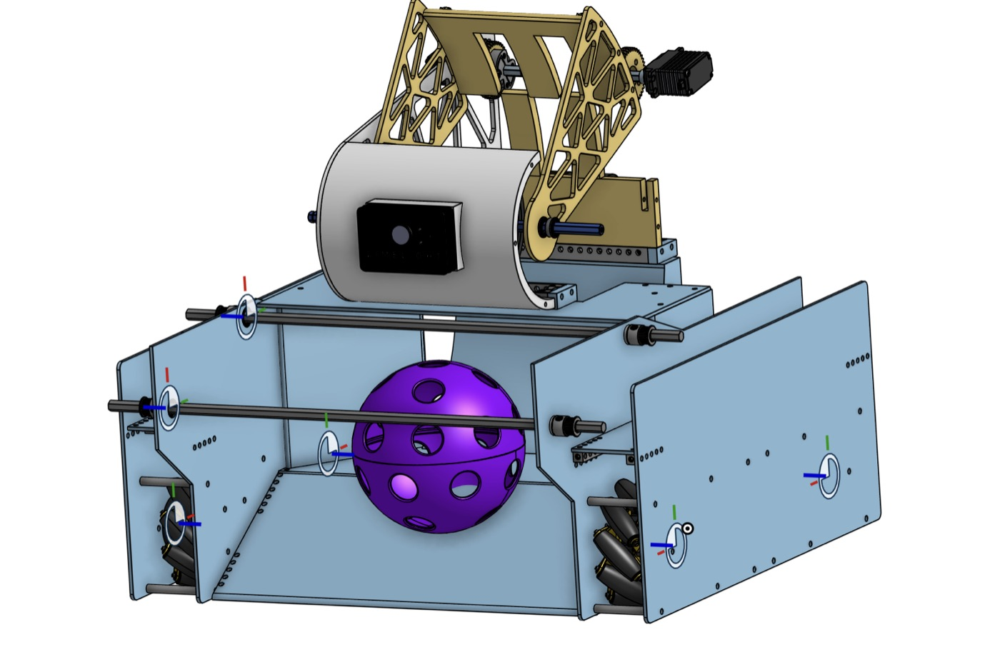
Phase 01 / Full-System CAD
Initial robot architecture
The early CAD layout established the overall robot envelope, mecanum drivetrain placement, side plate geometry, camera mount, and an upper scoring mechanism designed around game-piece handling.
- Packaged drivetrain, arm, transfer path, and camera into one robot envelope.
- Used trussed plates to reduce mass while keeping mounting stiffness.
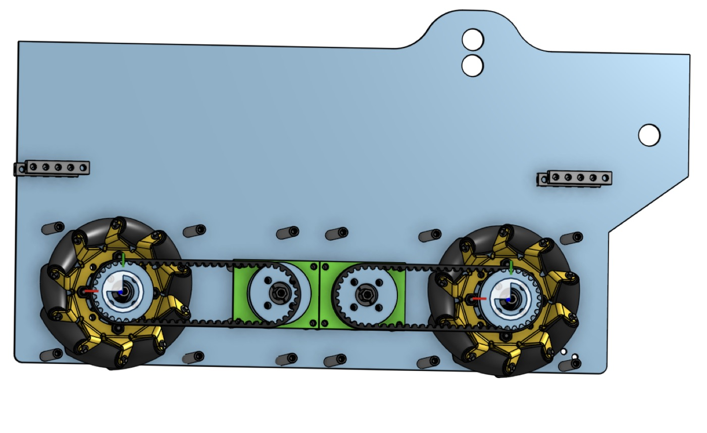
Phase 02 / Drivetrain Transmission
Belt-driven wheel modules
A dedicated drivetrain study focused on belt routing between motors and mecanum wheels, while keeping shafts, pulleys, standoffs, and side plates aligned inside the robot frame.
- Compared belt spacing, pulley placement, and wheel shaft support.
- Kept the transmission serviceable inside the side rail structure.
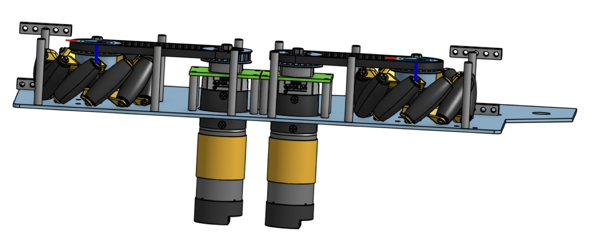
Phase 03 / Drive Module Detail
Motor-to-wheel packaging
The side-module CAD made the drivetrain easier to evaluate as a real assembly: motor placement, pulley diameter, belt wrap, bearing support, and wheel clearance could be checked in one focused subsystem view.
- Refined the belt path around mecanum wheel shafts and motor output.
- Kept the module compact enough to fit inside the competition frame.
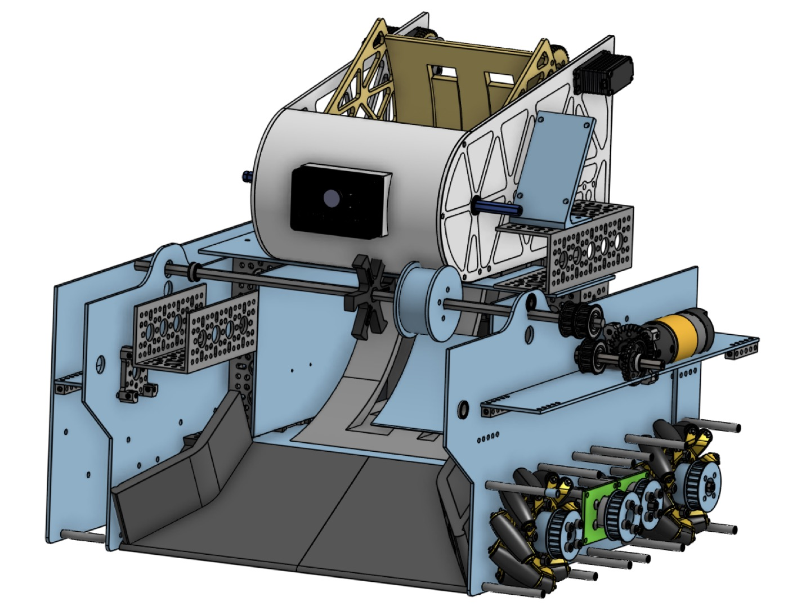
Phase 04 / Integrated Revision
Mechanism packaging update
The robot CAD was revised to integrate the intake/transfer geometry more tightly with the drivetrain, side rails, camera mounting, and upper mechanism structure.
- Shifted from isolated subsystems into a more complete robot assembly.
- Improved mounting access for motors, shafts, bearings, and electronics.
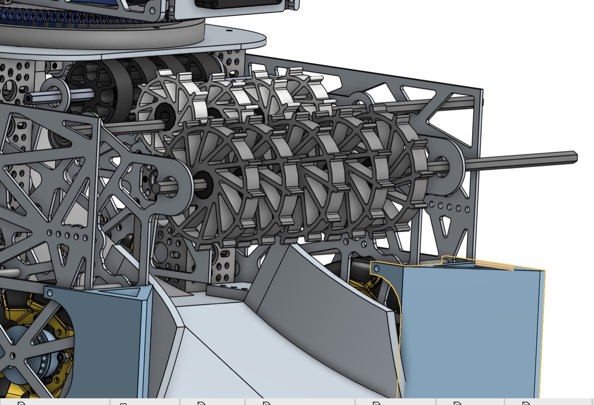
Phase 05 / Intake Path
Roller transfer geometry
The roller-transfer CAD focused on how the game element would move from intake into the robot. Roller spacing, shaft position, compression, and plate clearance all affected reliability.
- Modeled multiple roller stages for controlled game-piece transfer.
- Checked clearances around side plates, shafts, and the scoring path.
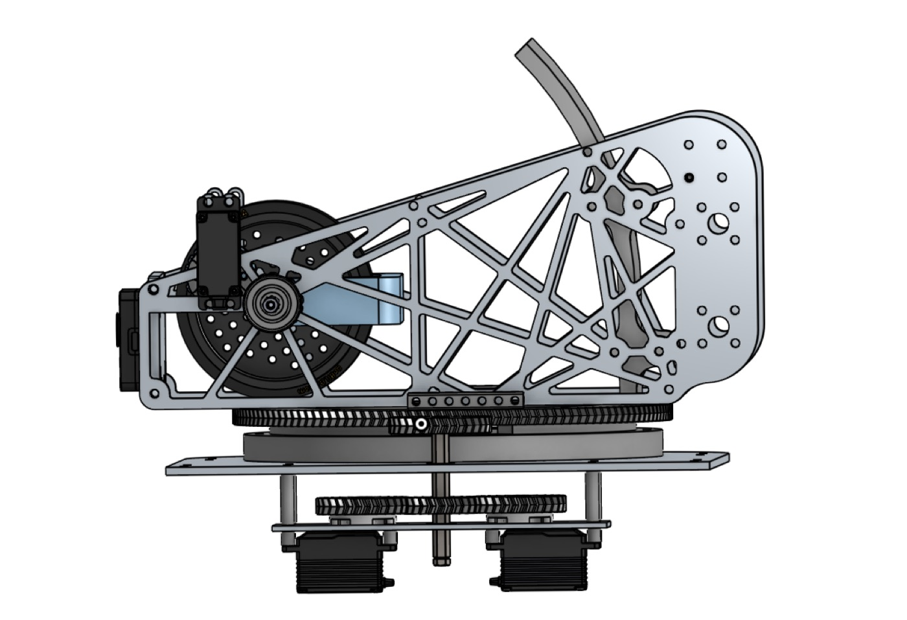
Phase 06 / Arm Linkage
Scoring arm motion study
The side-arm CAD isolated the scoring linkage so pivot locations, plate stiffness, motor mounting, and end-effector reach could be evaluated without the full robot obscuring the mechanism.
- Studied the arm's operating envelope and structural support points.
- Separated linkage behavior from drivetrain and intake packaging decisions.
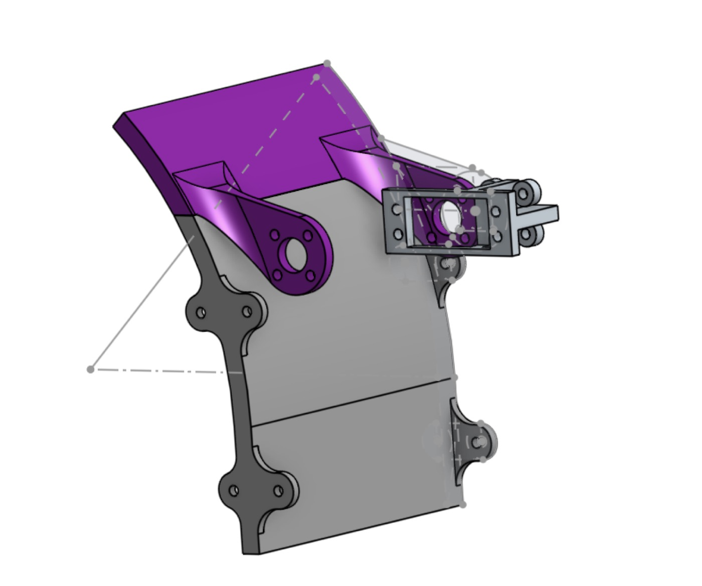
Phase 07 / Game-Piece Control
Pivoting guide and hopper linkage
A smaller mechanism study explored a pivoting guide/hopper element for controlling the game piece inside the robot. The goal was to make the transfer path more predictable without overcomplicating the mechanism.
- Studied linkage motion around a compact side-plate package.
- Balanced actuation simplicity with better control of ball position.
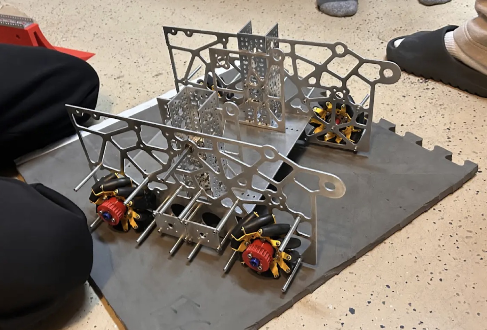
Phase 08 / Physical Fit-Up
CAD-to-hardware transition
The first physical build stage translated the CAD side plates, drivetrain spacing, shafts, and wheel placement into hardware. This exposed real assembly constraints that are harder to see in CAD alone.
- Validated side-plate alignment, shaft spacing, and wheel module clearance.
- Moved from design intent into manufacturable robot structure.
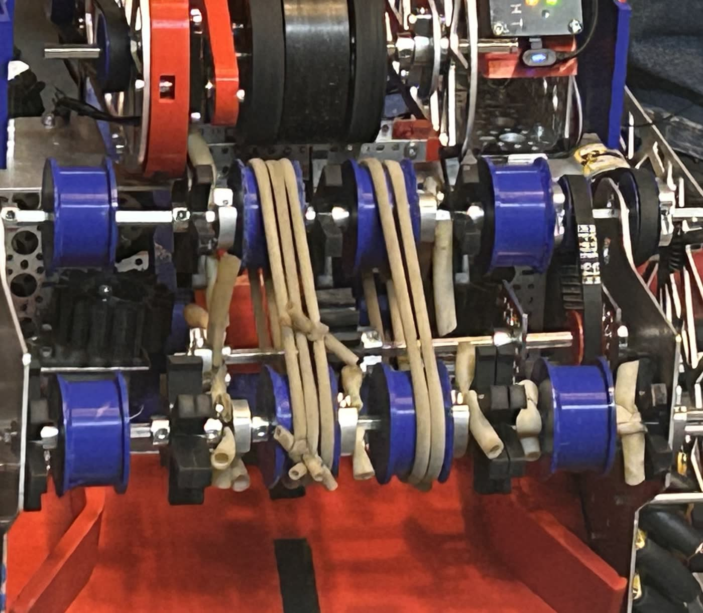
Phase 09 / Transfer Tuning
Roller and belt refinement
Physical testing showed how the roller path behaved under real compression, belt tension, and shaft alignment. The blue pulleys, belts, and compliant rollers formed the transfer system that had to move game pieces consistently.
- Tuned belt routing and roller spacing against real hardware tolerances.
- Used close-up inspection to diagnose slipping, interference, and alignment.
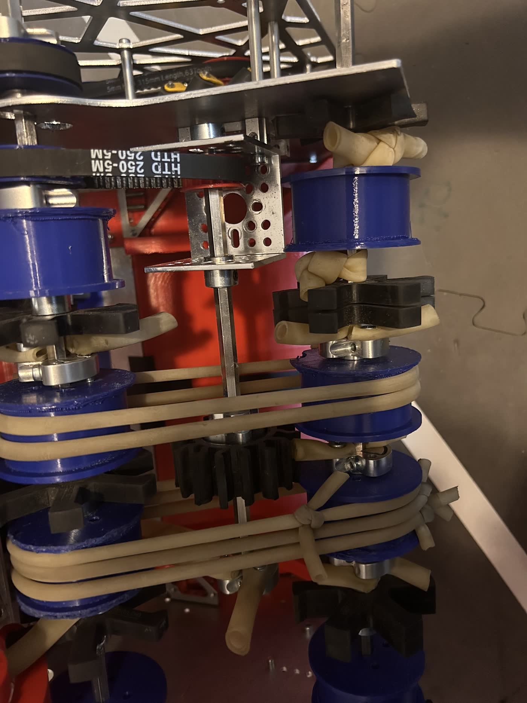
Phase 10 / Belt Routing
Transfer hardware close-up
The second transfer close-up shows the real belt path, pulley stack, and roller mounting more directly. This stage was about making the CAD transfer concept survive real belt tension, fastener placement, and repeated game-piece contact.
- Checked belt tracking and pulley alignment under physical constraints.
- Refined the roller stack for more consistent game-piece movement.
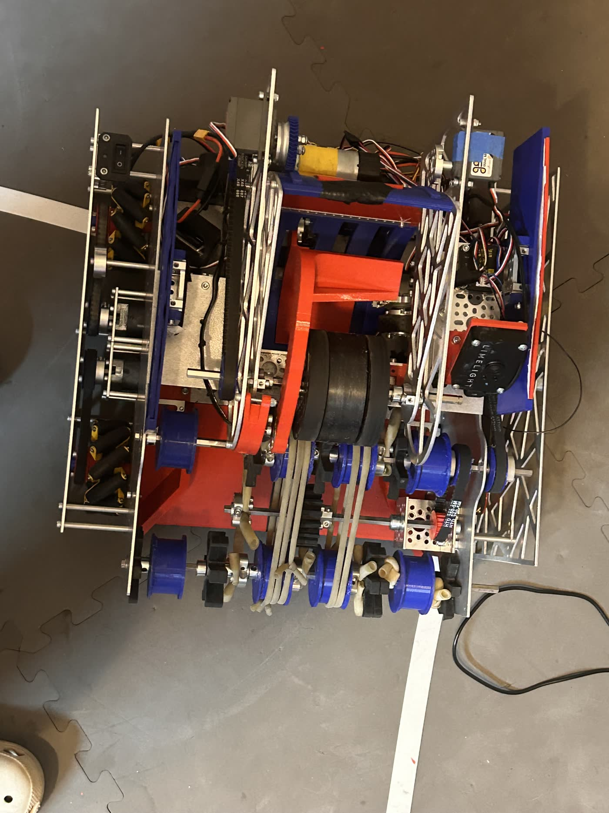
Phase 11 / Integrated Robot
Full competition assembly
The full robot brought together the drivetrain, transfer path, camera, electronics, trussed side plates, motor controllers, and wiring. This stage shifted the work from mechanism debugging into system integration.
- Integrated mechanical, electrical, and sensor subsystems into one robot.
- Balanced serviceability with competition-ready packaging.

Phase 12 / Field Configuration
Competition-ready layout
The field-ready robot shows the integrated intake, transfer rollers, side plates, camera placement, launcher/scoring mechanism, and team-number panels in a complete competition configuration.
- Validated robot packaging in a realistic field environment.
- Prepared the mechanism layout for driver practice and competition testing.
Phase 13 / Drive Test
Motion validation
Drive testing checked whether the drivetrain, software commands, and physical robot response matched the intended field behavior. Testing like this connects CAD geometry and hardware assembly to actual robot motion.
- Verified movement under real floor and driver-control conditions.
- Used test behavior to identify mechanical or control-side tuning needs.
Phase 14 / Field Test
Robot validation on field layout
Field testing gave the final feedback loop: drivetrain response, mechanism timing, driver control, and field interaction all had to work together under realistic constraints.
- Tested robot behavior in a field-like environment.
- Connected subsystem iteration to match-ready operation.